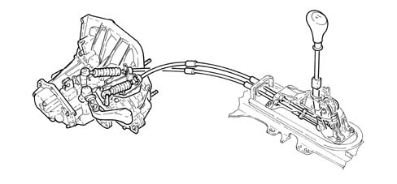
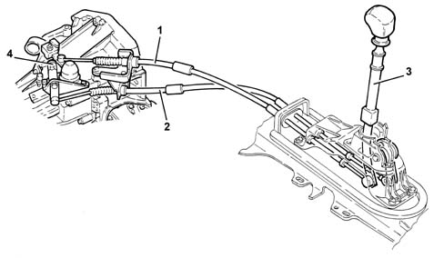

2125C manual gearbox external control (cables)
- Path
- Descriptions > 21 GEARBOX > 2125 MANUAL GEARBOX EXTERNAL CONTROLS > 2125C manual gearbox external control (cables)
- Kind
- system description
- Applies to
- engines: 1.6 TS, 3.2 V6, 1.9 JTD 8V, 1.9 JTD 16V; all production periods
- Interactive page
- https://sloeber94.github.io/elrnDB-a147/en/#/3022467
Applies to: engines: 1.6 TS; all production periods
OPERATION
Introduction
The twin cable external control is made from plastic materials with excellent properties (resistance to fatigue, self-lubrication capacity, reduced weight)
This type of control combined with a distribution of the inertia masses towards the gearbox has made it possible to achieve:
- a high level of driving comfort due the action of filtering the vibrations on account of the lightness of the external control components
- precise manoeuvring and a reduction of the matching clearances.

Applies to: engines: 3.2 V6; all production periods
COMPOSITION
TYPE
Current developments
The twin cable external control is made from plastic materials with excellent properties (resistance to fatigue, self-lubrication capacity, reduced weight)
This type of control combined with a distribution of the inertia masses towards the gearbox has made it possible to achieve:
- a high level of driving comfort due the action of filtering the vibrations on account of the lightness of the external control components
- precise manoeuvring and a reduction of the matching clearances.
The external control is equipped with an inhibitor device for the engagement of Reverse gear which, by means of a travel inhibitor during selection, guarantees greater safety against accidental manoeuvres.
The adjustment of the gear selector/engagement cables is carried out using the special nut near the gear selector lever.

1- Gear engagement cable 2- Gear selector cable 3 - Reverse gear engagement inhibitor device 4 - Gear selector/engagement cables adjustment bracket
Applies to: engines: 1.9 JTD 8V, 1.9 JTD 16V; all production periods
COSTITUZIONE
TIPOLOGIA
Attuali sviluppi
Il comando esterno a doppio flessibile è costruito con materiali plastici ad elevate caratteristiche (resistenza alla fatica, potere autolubrificante, peso ridotto).
Questo tipo di comando abbinato ad una distribuzione delle masse inerziali verso il cambio ha consentito di ottenere:
- un elevato comfort di marcia, dovuto all'azione di filtraggio delle vibrazioni per la leggerezza dei componenti del comando esterno;
- una manovra precisa e la riduzione dei giochi di accoppiamento.
Il comando esterno è dotato di un dispositivo di inibizione dell'innesto della RM che, mediante un inibitore di corsa in selezione, garantisce una maggior sicurezza contro le manovre involontarie.
La registrazione dei flessibili di selezione/innesto marce è realizzata tramite l'apposito dado posizionato in prossimità del gruppo di selezione e innesto marce sul cambio.
1 - Flessibile di innesto marce 2 - Flessibile di selezione marce 3 - Dispositivo inibitore innesto RM 4 - Staffa di registrazione flessibili di selezione/innesto marce